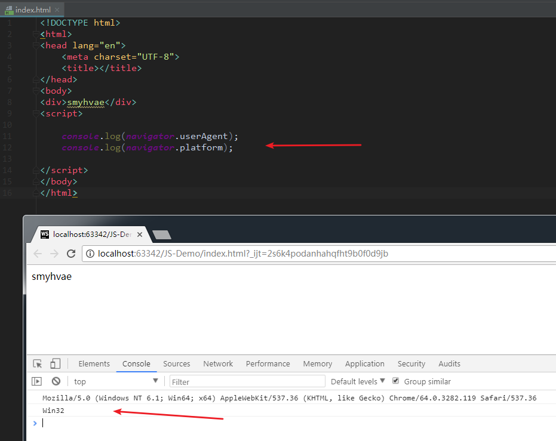

JavaScript基础分为三个部分：
ECMAScript：JavaScript的语法标准。包括变量、表达式、运算符、函数、if语句、for语句等。
DOM：文档对象模型，操作网页上的元素的API。比如让盒子移动、变色、轮播图等。
BOM：浏览器对象模型，操作浏览器部分功能的API。比如让浏览器自动滚动。
BOM：Browser Object Model，浏览器对象模型。
BOM的结构图：
从上图也可以看出：
window对象是BOM的顶层(核心)对象，所有对象都是通过它延伸出来的，也可以称为window的子对象。
DOM也是BOM的一部分。
window对象是JavaScript中的顶级对象。
全局变量、自定义函数也是window对象的属性和方法。
window对象下的属性和方法调用时，可以省略window。
下面讲一下 BOM 的常见内置方法和内置对象。
比如说，alert(1)是window.alert(1)的简写，因为它是window的子方法。
三种系统对话框
alert(); //提示框 confirm(); //询问框 prompt(); //输入框
`
1、打开窗口：
window.open(url, target, param)
参数解释：
url：要打开的地址。
target：新窗口的位置。可以是：_blank 、_self、 _parent 父框架。
param：新窗口的一些设置。
返回值：新窗口的句柄。
补充： param这个参数，可以填各种各样的参数，比如：
(注意这些参数在不同的浏览器上不一定兼容！）
name：新窗口的名称，可以为空
features：属性控制字符串，在此控制窗口的各种属性，属性之间以逗号隔开。
fullscreen= { yes/no/1/0 } 是否全屏，默认no
channelmode= { yes/no/1/0 } 是否显示频道栏，默认no
toolbar= { yes/no/1/0 } 是否显示工具条，默认no
location= { yes/no/1/0 } 是否显示地址栏，默认no。（有的浏览器不一定支持）
directories = { yes/no/1/0 } 是否显示转向按钮，默认no
status= { yes/no/1/0 } 是否显示窗口状态条，默认no
menubar= { yes/no/1/0 } 是否显示菜单，默认no
scrollbars= { yes/no/1/0 } 是否显示滚动条，默认yes
resizable= { yes/no/1/0 } 是否窗口可调整大小，默认no
width=number 窗口宽度（像素单位）
height=number 窗口高度（像素单位）
top=number 窗口离屏幕顶部距离（像素单位）
left=number 窗口离屏幕左边距离（像素单位）
2、关闭窗口：window.close()
3、代码举例：
<!DOCTYPE html>
<html>
<head lang="en">
<meta charset="UTF-8">
<title></title>
</head>
<body>
<a href="">点击我打开一个新的页面</a><br>
<a href="">点击我关闭本页面</a>
<script>
//新窗口 = window.open(地址,是否开新窗口,新窗口的各种参数);
var a1 = document.getElementsByTagName("a")[0];
var a2 = document.getElementsByTagName("a")[1];
a1.onclick = function () {
//举例1： window.open("http://www.jx.com","blank");
var json = {
"name": "helloworld",
"fullscreen": "no",
"location": "no",
"width": "100px",
"height": "100px",
"top": "100px",
"left": "100px"
};
window.open("http://www.baidu.com", "blank", json); //举例2
}
//关闭本页面
a2.onclick = function () {
window.close();
}
</script>
</body>
</html>
window.location可以简写成location。location相当于浏览器地址栏，可以将url解析成独立的片段。
href: 代表当前浏览器地址栏中的地址
hash: 返回url中#后面的内容，包含#
host: 主机名，包括端口
hostname: 主机名
pathname: url中的路径部分
protocol: 协议 一般是http、https
search: 查询字符串
代码案例一：
<body>
<div style='background:gray; width:100px; height:100px;'>smyhvae</div>
<script>
var div = document.getElementsByTagName("div")[0];
div.onclick = function () {
location.href = "http://www.baidu.com"; //点击div时，跳转到指定链接
// window.open("http://www.baidu.com","_blank"); //方式二
}
</script>
</body>
代码案例二：
有时候，当我们访问一个不存在的网页时，会提示5秒后自动跳转到指定页面，此时就可以用到location。举例：
<script>
setTimeout(function () {
location.href = "http://www.baidu.com";
}, 5000);
</script>
(通过location.href 跳转网页时，等效于使用assign()。但项目中一般就是使用location.href 进行页面之间的跳转。)
location.replace()：替换浏览器地址栏的地址，不会记录到历史中
location.reload()：重新加载
window.navigator 的一些属性可以获取客户端的一些信息。
userAgent：系统，浏览器
platform：浏览器支持的系统，win/mac/linux
举例：
console.log(navigator.userAgent); console.log(navigator.platform);
效果如下：
